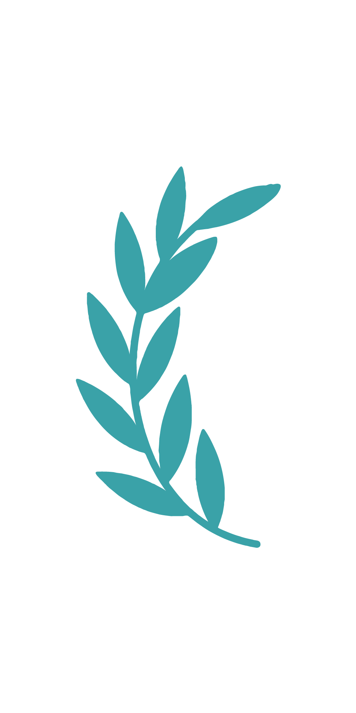
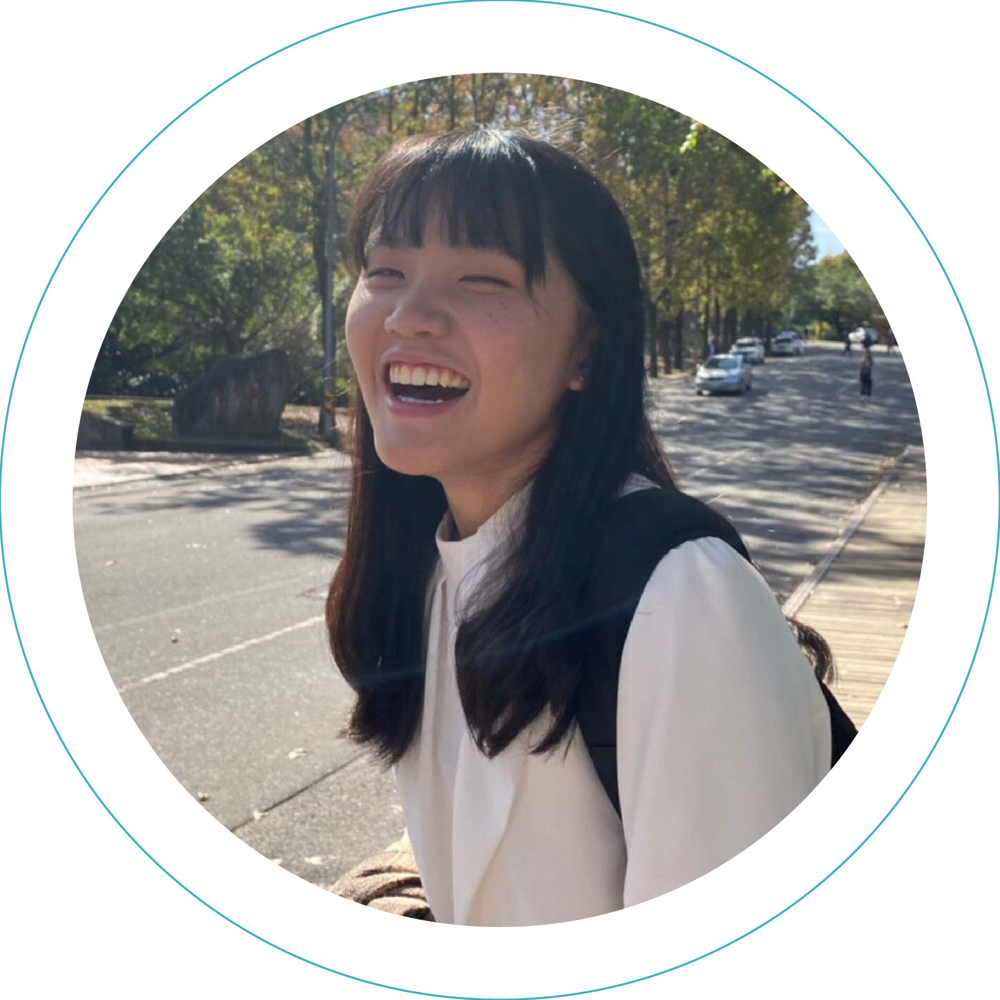
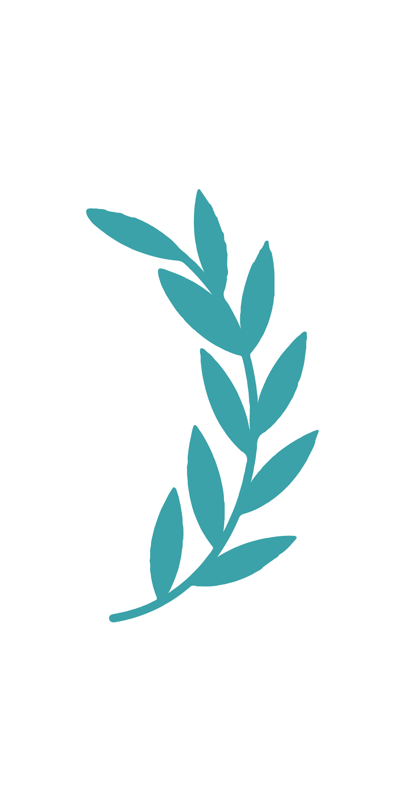
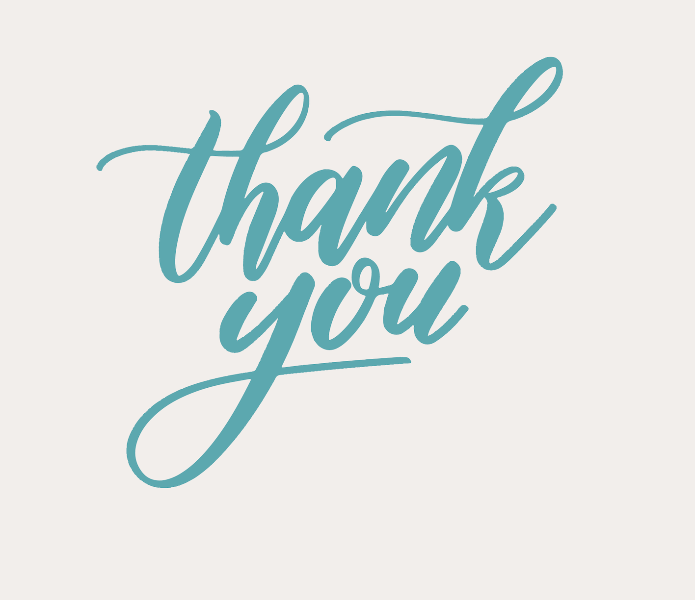

趙姿晴
CHAO, TZU-CHING
0963-799-212
zchingchaoo@gmail.com

您好，我是趙姿晴，目前25歲，畢業於政大廣告學系，在學實習與畢業後皆是從事與大學科系相符的行業，曾任職於廣告、媒體代理商，現則為快消產業產品經理，負責產品企劃開發與行銷操作等。從校園生活開始，我便不斷地嘗試各種不同領域的課程、挑戰，我認為多方的嘗試能讓我從中獲得經驗值並作為未來的養分，同時每次努力的過程也都能讓我重新認識自己，讓我更加了解自己想要的是什麼。
大學期間期望自己能培養跨領域專業，所以有自主修習相關通識課程，課程主要內容為資料科學、程式設計、資訊安全等基本程式概念與資訊科學素養，也是從當時初步接觸到Python，雖然只是簡單的內容，但過程中邏輯的思考、解決問題的開心感及產出時的成就感，讓我燃起對於對此領域的興趣，後來也有修習資料結構與演算法課程，學習程式設計的邏輯基礎。
畢業後雖直接從事了本科系(行銷)工作且較繁忙，但較有空閒時會利用線上免費教材進行自我學習，也有搜尋相關產業或轉職者的分享，明白非本科系出身在轉職工程師這塊相對辛苦，雖然有在自我學習但也擔心不夠扎實，所以期望能尋求外界的幫助，進行專案開發等，並與其他擁有同樣目標的夥伴一起前進，也是因此找到了WeHelp。
目前還在職中，但了解到自己對程式尚停留在基礎認識階段，需花費較多時間參與，因此若確認申請上WeHelp，會離開現職全職投入轉職，確保一週至少能有60小時的時間學習，且每日都要能接觸程式，將現在的上班時間轉而投入在程式學習中，並加入週末
（我剛好很宅。）
，在階段正式開始前，也會提前準備，多汲取相關知識，降低後續學習阻礙。
KKCompany，有了解到其在公司治理上強調「人是公司的基礎」，並期望透過全方位的內部培育計畫，幫助提升個人專業且重視個人的職涯發展。身邊剛好有轉職的朋友在內部就職，雖然剛加入公司沒多久，但覺得身邊的主管、同事都是樂於協助解決問題的，並非僅追求公司的成長，而是與人共好。
近期較明顯的案例主要來自工作上，產品經理經常需要進行外部與內部跨單位溝通，確保案子如期推進，然公司較傳統且有許多“資深”員工，偶爾會有對方刻意推工作或說話不客氣的狀況，當下都會非常生氣或認為是不是自己不夠好。
而對於情緒的處理，我認為正視自己的情緒並接納它是重要的，我不會抗拒或否認自己有負面情緒的存在，也不會無法面對自己的不足。在產生情緒後，我會站起來走動一下、上個廁所或下班後與朋友見面等，讓自己喘息一下，離開產生負面情緒的空間或找到抒發情緒的管道。
我認為自己是相對正向的，認為每個問題的發生都能帶來經驗與學習，重要的是我要如何去解決帶來負面情緒的問題來源，不管是透過自我成長、與對方多次溝通或請主管協助介入，因為明白若深陷負面情緒而影響日常表現或彼此對立並無法改變任何事。
因也有自學平面設計與排版的經驗，因此在開發申請網頁時，也會特別在意整體視覺的呈現，如開頭頭貼、個人資料、小圖示的編排，雖然腦中能想像完成的畫面且課程也有學到，但要真的轉為實作確實不簡單，所以還是花了點時間釐清每一階層的關係與排版呈現、不斷的試錯，完成理想的畫面。
不帶先入為主的想法與他人交往，彼此尊重對方的想法或價值觀。
很開心有WeHelp這個計畫，讓期望成為軟體工程師的我們可以多一個彼此學習、扶助彼此成長的管道與機會！明白會程式的人可能很多，但能夠同時為他人提供幫助，為此領域創造更多價值或共好的人卻不多，單打獨鬥很難走得長遠，所以很希望能有機會加入這個計畫，與大家朝同一個目標一起前進。
